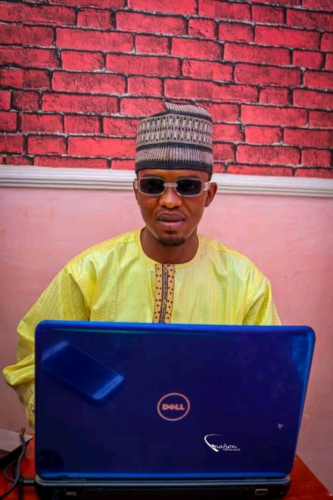

About website developer

I'm by name Ni'imatullah Kabiru Tijjani i was born at Kano,Kofar na'isa. I started
my islamiya in the year 2005. Meanwhile i started my western Education in 2007. I
attended Grammer colloge Kano for my early education,then Rumfa colloge Kano for my Junior
secondary school which i left for Day science colloge Kano for my senior secondary school.
i went to Cas kano for few months offering IJMB. Presently i'm a student at Lincoln
colloge studying cyber security.
Me being the developer of Rosfa website because i'm a member from ROSFA and i'm always proud
to be a member because i learnt alot from it.